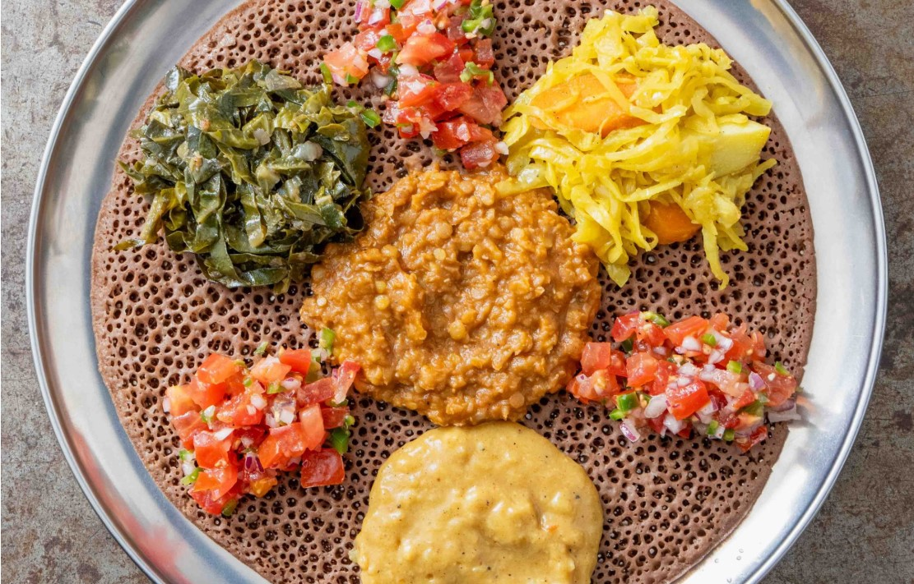

Isombe
A Rwandan favourite of slow-cooked cassava leaves thickened with groundnut flour and palm oil, often served with plantain, rice or cassava.
A Rwandan favourite of slow-cooked cassava leaves thickened with groundnut flour and palm oil, often served with plantain, rice or cassava.

Thin-sliced chicken rubbed with yaji, a peanut and chili spice mix, then grilled on skewers. A Hausa street-food classic.

A spongy, sour flatbread made from teff and used as plate and spoon for stews like doro wat.

Lamb slow-cooked with apricots and olives in a conical clay pot, scented with ras el hanout and preserved lemon.